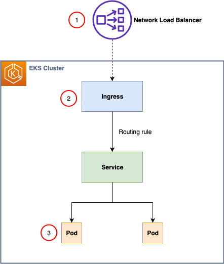
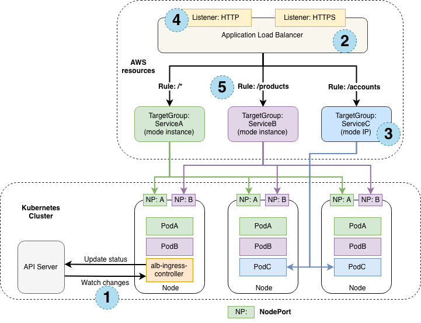

AWS Load Balancer
Controller"] ING["Ingress
(annotations)"] SVC["Service
type: LoadBalancer"] end ALB["

ALB / NLB"] User["
User"] ING --> IC SVC --> IC IC -->|"tạo & cấu hình"| ALB User -->|"HTTP/HTTPS"| ALB
Ở Section 13 bạn đã biết Service kiểu LoadBalancer và Ingress. Trên EKS, khi bạn tạo Service LoadBalancer hoặc Ingress,
một thành phần tên AWS Load Balancer Controller sẽ tự động tạo ra Application Load Balancer (ALB) hoặc Network Load Balancer (NLB) thật trên AWS để đưa traffic từ ngoài vào cluster.
EKS hỗ trợ 2 loại load balancer chính:


Để EKS có thể tự tạo ALB/NLB, bạn cần cài AWS Load Balancer Controller (kế thừa từ ALB Ingress Controller cũ). Controller chạy như một Deployment trong cluster, quan sát các resource Ingress/Service và tự tạo, cấu hình load balancer tương ứng trên AWS thông qua IAM Role (IRSA – IAM Roles for Service Accounts).
Ingress/Service khai báo mong muốn; AWS Load Balancer Controller đọc các annotation rồi tạo ALB/NLB tương ứng trên AWS.
| Tiêu chí | ALB (L7) | NLB (L4) |
|---|---|---|
| Tầng hoạt động | Application (HTTP/HTTPS) | Transport (TCP/UDP/TLS) |
| Định tuyến | Theo host, path, header, query | Chuyển tiếp theo IP/port |
| Hiệu năng | Vừa phải, thêm độ trễ nhỏ | Rất cao, độ trễ thấp |
| IP cố định | Không (dùng DNS) | Có (Elastic IP mỗi AZ) |
| Use case | Web app, API, microservice | TCP lớn, game, IoT, gRPC |
Một ALB duy nhất định tuyến /api → backend, / → frontend (sẽ làm ở Lab 2 Part 2).
Dùng NLB cho game server, gRPC, MQTT... cần IP tĩnh và độ trễ thấp.
Gắn ACM certificate và AWS WAF vào ALB để bảo vệ ứng dụng web.
alb.ingress.kubernetes.io/scheme: internet-facing (hoặc internal), alb.ingress.kubernetes.io/target-type: ip (đăng ký IP của Pod trực tiếp, thay vì instance).spec.type: LoadBalancer với annotation để tạo NLB thay vì ALB mặc định.